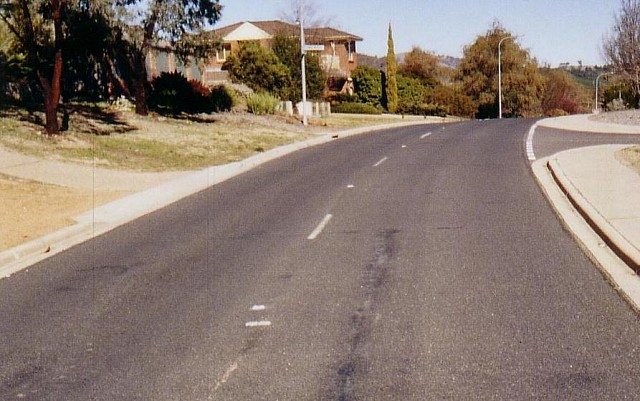
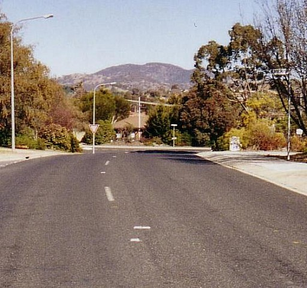
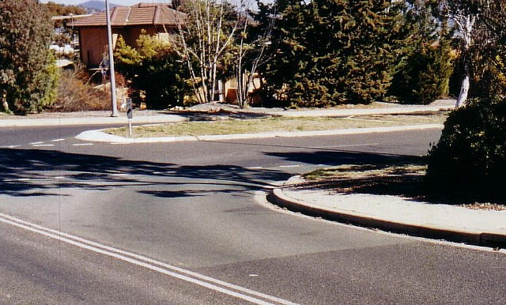
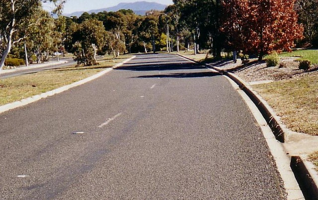
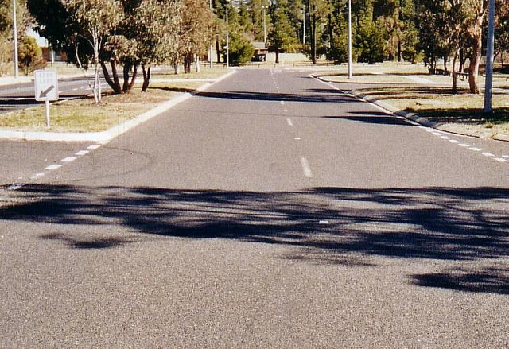
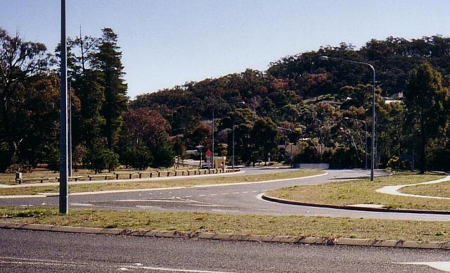

Numbers and arrows on the map represent the location and direction of where the photographs were taken. Click links above to view photo pages.
Macarthur Park - Jackie Howe Cresent onto Carson Street
|| Contents || Coyne [01-06] | Jackie Howe [07-13] | Merriman [14-20] | Carson [21-27] || Home ||
Numbers and arrows on the map represent the location and direction of where
the photographs were taken. Click links above to view photo pages.
Return to racingcircuits.net's Photo Archive Main Index

21 - ...and swoops down the hill towards Carson Street.

22 - One more crest to cope with...

23 - ...before the drop down to the Carson Street intersection...

24 - ...where the circuit turns into the right carriageway. This is to
discourage later hoons, as Australians drive on the left.

25 - No nasty crests on Carson Street - just a short straight, a gentle
curve...

26 - ...and another short straight down to Coyne Street.

27 - The final turn is from Carson into the right carriageway of Coyne.
| << PREVIOUS PAGE |
Photographs and Text ©Mark Taylor. Reproduced here with kind permission.